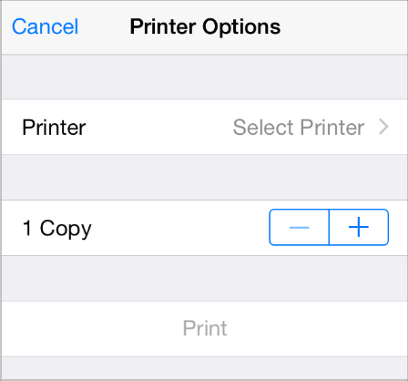

AirPrint
Using AirPrint, people can wirelessly print content from your app and use Print Center app to check on a print job.

You can take advantage of built-in support for printing images and PDF content, or you can use printing-specific programming interfaces to do custom formatting and rendering. iOS handles printer discovery and the scheduling and execution of print jobs on the selected printer.
Typically, users tap the standard Action button in your app when they want to print something. When they choose the Print item in the view that appears, they can then select a printer, set available printing options, and tap the Print button to start the job.
Users can check on the print job they requested in the Print Center app, which is a background system app that is available only while a print job is in progress. In Print Center, users can view the current print queue, get details about a specific print job, and even cancel the job.
You can support basic printing in your app with comparatively little additional code (to learn about adding print support to your code, see Drawing and Printing Guide for iOS). To ensure that users appreciate the printing experience in your app, follow these guidelines:
Use the system-provided Action button. Users are familiar with the meaning and behavior of this button, so it’s a good idea to use it when possible. The main exception to this is if your app does not contain a toolbar or navigation bar. When this is the case, you need to design a custom print button that can appear in the main UI of your app, because the Action button can only be used in a toolbar or navigation bar.
Display the Print item when printing is a primary function in the current context. If printing is inappropriate in the current context, or if users are not likely to want to print, don’t include the Print item in the view revealed by the Action button.
If appropriate, provide additional printing options to users. For example, you might allow users to choose a page range or to request multiple copies.
Don’t display print-specific UI if users can’t print. Be sure to check whether the user’s device supports printing before you display UI that offers printing as an option. To learn how to do this in your code, see UIPrintInteractionController Class Reference.
Copyright © 2014 Apple Inc. All rights reserved. Terms of Use | Privacy Policy | Updated: 2014-09-17